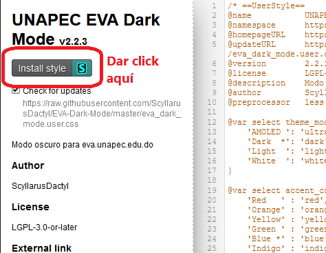
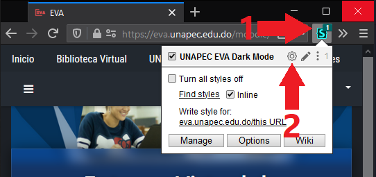
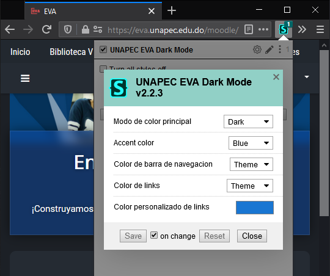

Stylus es una extension que permite instalar y manejar temas a diferentes paginas web dentro del navegador.
Ademas de el EVA Dark Mode™, existen tambien temas para otros sitios populares, como Facebook™, Google™, Youtube™, entre otros...
Si se descarga un tema, este solo se aplica a un sitio web específico (y no a todos los sitios).
Click al boton de abajo para instalar el estilo. Se debe tener la extensión Stylus™ agregada en el navegador, o sino solo se mostrará una página con texto.
Si la extensión está correctamente agregada, cuand se abra el enlace de arriba solo es necesario darle click a Install style.
Para cambiar de colores (actualmente en prueba), primero abrir el menu de la extensión de Stylus. Luego darle click al boton con el engranaje al lado de EVA Dark Mode™.
 